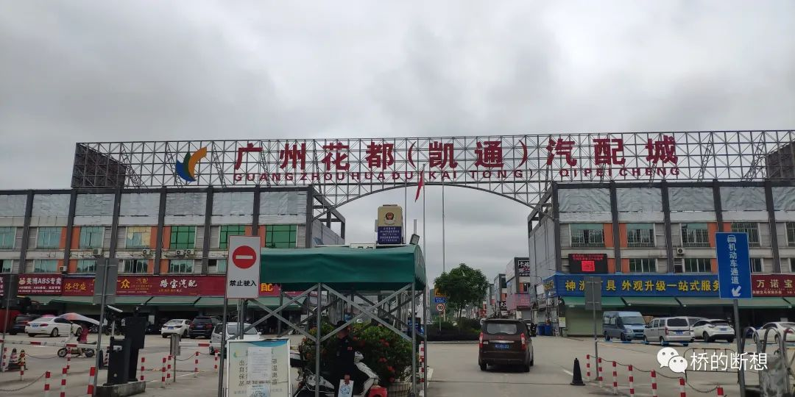
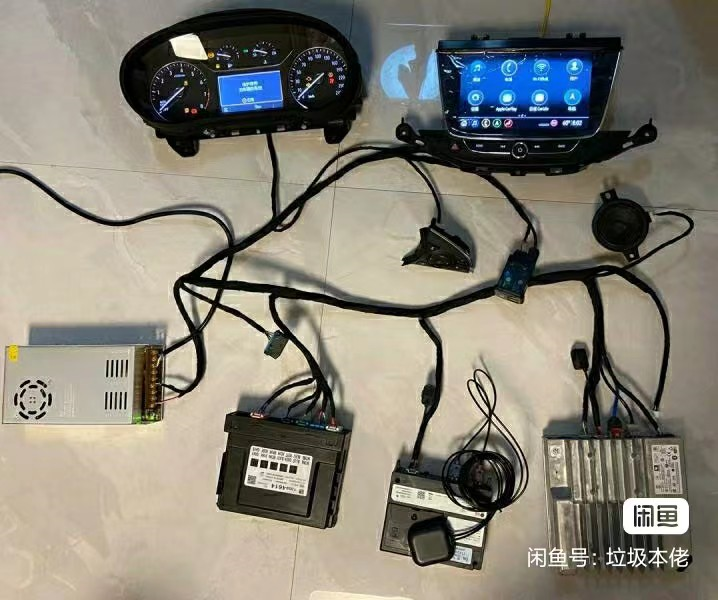
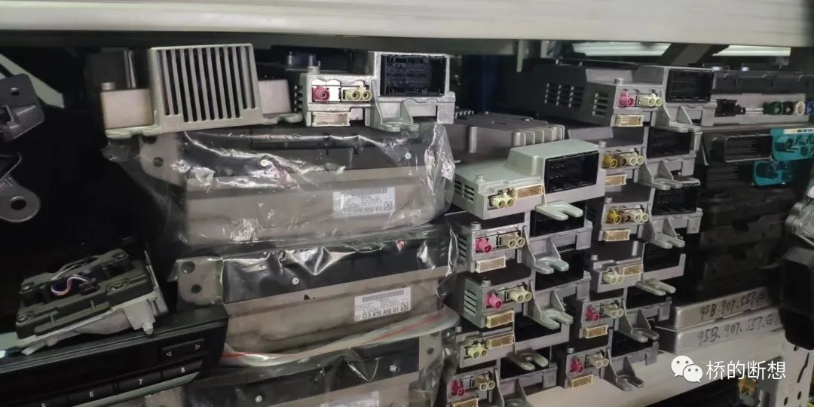
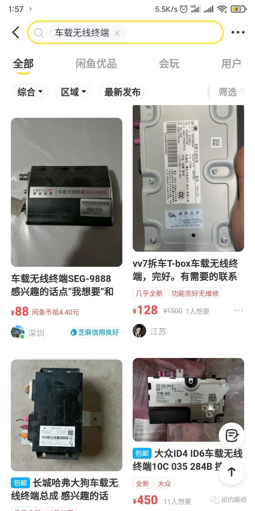
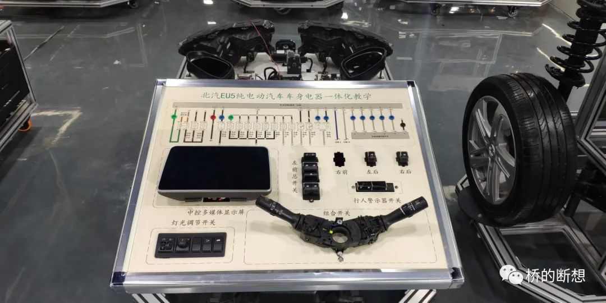
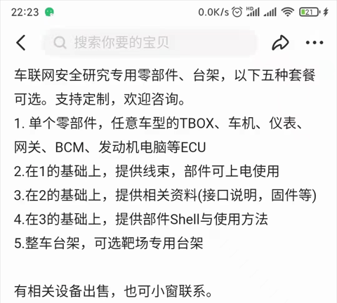

车联网安全基础知识之测试台架采购
最近在广州出差，到广州花都(凯通)汽配城逛了一圈。之前研究需要也弄过一些台架，搭建台架确实让人头大，特别是还要带漏洞的。今天就和大家聊一聊测试件购买的三两事儿。
汽车界”华强北”一日游
首先为什么是广州花都(凯通)汽配城一日游，它有什么神秘之处? 它是国内最大的汽配城，总共约有1500个铺位。花都汽配城的前身是非常知名的陈田汽配城（号称汽车界华强北），陈田汽配城拆迁后，超过8成的商户都搬迁到了花都汽配城。虽然陈田在2019年由于陈田村改造而落幕，但江湖上还流传着不少陈田的传说。
拿着方向盘进陈田，你可以开走一辆法拉利。
据说，德国著名汽车杂志《AutoBild》有一辆宝马320d GT的长测车。后来，这辆车的中控屏幕、中控总成和导航主机在汉堡被偷走了。不过，德国人为主机加装了一套GPS定位系统，可在中控屏幕被偷了之后实时查看它的位置。后来，德国人发现这套防盗GPS系统定位在哪了？没错，就是陈田。71天，这中控屏经历了一场18000公里的神奇旅程。
正是由于这些传说，我注意到了陈田。而巧合的是近期也有采购需求，我最近又在广州出差，于是周六约了的本地朋友去一探个究竟。
花都汽配城在广州花都区，从白云机场出发往北十多公里就此行的目的地。

从地图上可以看到汽配城中还标记着广州陈田拆车件档，当时我一下车就直奔而去，却不巧的是该店铺正在装修中。但我们依旧上前去询问有网联件卖没有，得到了否定的答案，我们悻悻而归，于是一个店一个店去寻找。逛了2个多小时，终于全部走了一圈。发现两个特点第一这里面主营国外品牌豪华车的零部件，国内车的零部件极少。第二、这里依然以传统零部件为主，新能源车中的网联件较少。对于安全研究而言，这次旅程颇为失望，本以为是拿着麻袋随便装，最后却只是精挑细选了两个件儿。出现这样的原因或是因为网联车还比较新，拆车件较少，暂未形成市场规模；再者，对于改装，网联件不是改装的重点等诸多因素影响的结果。伴随着智能网联车占比不断提升，相信网联件的占比会不断提升。
虽然网联件很少，但这里是动力调校、防盗匹配的梦想之都，仍然值得探索。来看一看他们的办公环境，是不是和各位大佬的实验台颇有几分相似之处——脏乱但实用。

测试台架购买
大家做研究都有测试台架的需求，购买测试用的台架既要考虑台架的功能也要考虑成本，是一个费时费人的活儿。
虽然标题写的是台架购买，但这是很理想的情况，能够直接购买到测试台架。但现实的情况是购买单个零部件，自己解决或找人解决连线问题。对于车联网安全研究，有时需要整车台架；有时需要单个零部件的测试台架；有时需要特定车型的特定部件。需求是各式各样，给采购出了不少难题。下面和大家分享一些经验。

购买渠道
汽配城
汽配城中的零部件种类多，但大部分以机械件为主，服务于汽车改装。好处是能与人面对面交流，价格也相对比较便宜。
去汽配城最好有熟人带，前几年去北京的汽配城没人搭理，问就是没有。但巧合的是，同事的广东口音帮了大忙，一个店铺的老板听出了是老乡，这样才搭上线。这次在花都汽配城，这里的人相比之前在北京的汽配城来说热情很多。这也是我为什么要拉着一个本地人一块去原因，还是圈子文化，或者这里网联件也不少，只是打开的姿势不对。
4S店/汽修店
4S店/汽修店 从上游（供应商）中拿货，零部件的质量高，但价格比较昂贵。但是他们也是最不好打交道的，对于我们的稀奇古怪的需求他们往往是一言以拒之。
闲鱼
闲鱼上就要碰运气了，卖家大多也是汽配城的店主，问到技术问题大部分直接就是要什么件，给我零部件号，其他的不懂。很难找到懂点技术的人，只能走量，看运气。闲鱼上汇集了全国的卖家，可选择性更高。但也要注意防止被骗，在花都汽配城是不允许拍摄店铺门面的照片的，这里的保安说很多人拍了人家的门面去网上骗人。很多店家标价很低，备注有需要留言，一般还卖的蛮贵的。还是那种明码标价的好，一口价爽快。但也要注意砍价，如果标价较高可以直接5折来砍。

教具厂商
从汽修教具生产厂家手中购买，他们通过组装拆车件制作教具。优点美观，产品成熟；缺点定制化程度低，价格贵。

价格由低到高排序：闲鱼->汽配城->教具厂商->4S店/汽修店
集成度由高到低排序：教具厂商->汽配城->闲鱼->4S店/汽修店
叫法差异
去淘件的时候，想要TBOX和车机，在咸鱼上搜出来的量很少；在线下你说TBOX，他们会两眼瞪着你——什么是TBOX。这时就需要知道不同领域对同一部件的不同叫法。以TBOX和车机为例。
汽车圈一般把
TBOX称之为无线终端、紧急呼叫模块等。汽车圈一般把
车机(IVI)称之为导航主机、中控屏等。
使用汽车圈常用的名词代替我们常用的名词，能够更好的和卖家沟通，提高效率。
难点
制作台架也面临一些难题，对于这些难题我进行了总结，也给出了一些建议。
- 线束：如果是要更复杂的台架，线束错综复杂，还是要专业人士来做，我们搞安全做不了的原因是没有线束、接插件等，更不了解接插件线束定义与连接。三两个零部件的台架，我们还行，更多件或者全车电器我们就无能为力了。
- 上电：采购的难点是零部件好买，但是大部分零部件就只是部件，线束需要自己连接，上电的问题需要自己解决。如果购买TBOX或车机单个部件，线束可以用杜邦线等替代，上电问题可以通过分析硬件（根据电源芯片分析）解决。
- 接插件定义： 接插件定义，可以采用两种方式获得，人工分析，使用万用表、逻辑分析仪等设备识别（后期后专门写一篇文章来讲）；查资料，去汽车维修网站，找对应车型的电路图。
- 发票：大部分店家提供不了发票，这个需要我们自己找票来抵。
- APP账号： 台架需要与手机APP联动，分析控制报文，部分品牌的车型可通过闲鱼绑定激活。
结语
测试台架对于安全研究和展示极为重要，对于甲方来说可能只是一句话的事儿，但对于我们乙方来说还是不小的挑战，能够弄一套类似 “DVWA”理念的测试台架是最终理想。
闲鱼看到了一个卖家，提供车联网安全研究定制台架服务，看着好神奇。

最后，欢迎分享、交流淘件经验。